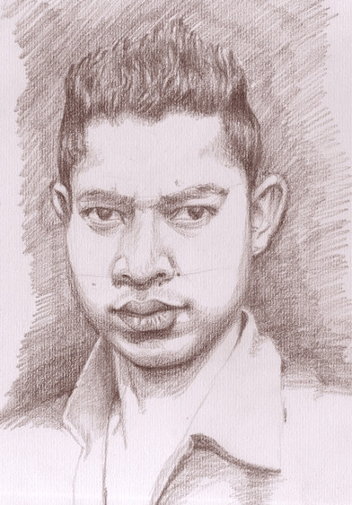
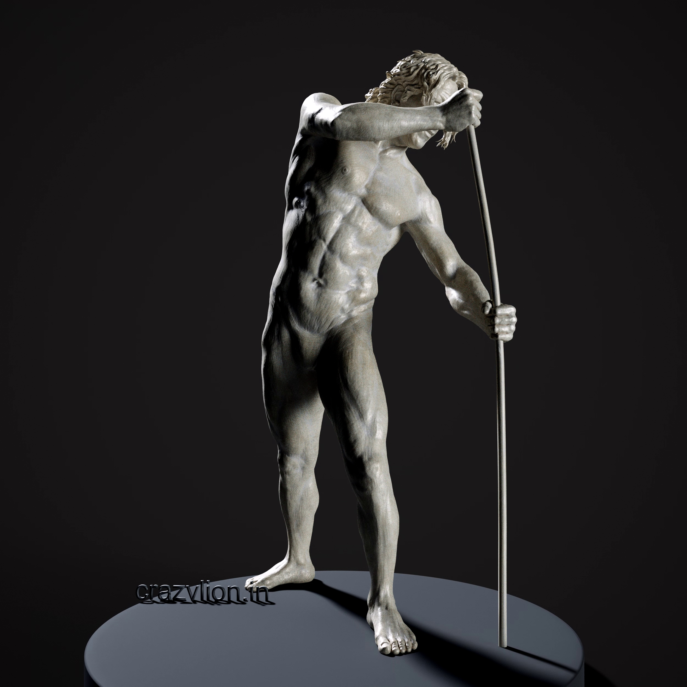
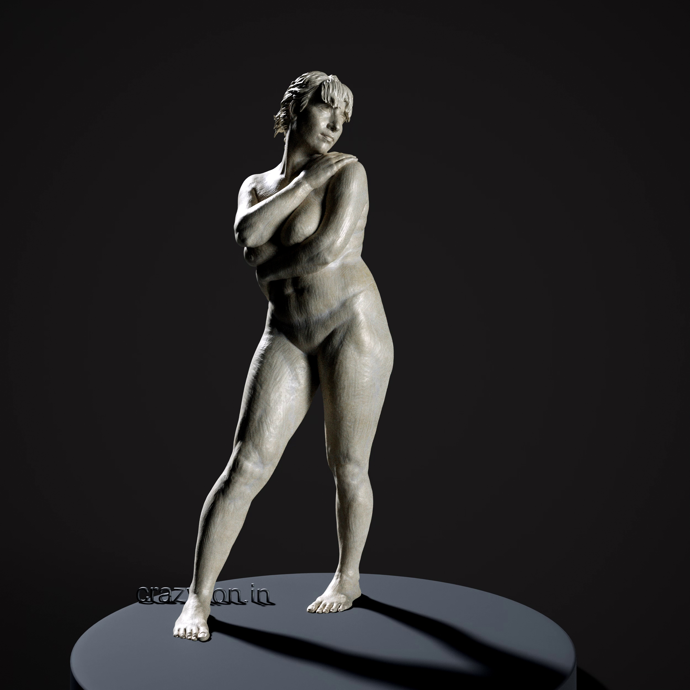

Showcase Gallery
Sculptures & Game Art






Welcome to **Crazylion Studio**, the digital workshop of Sarbeswar. Specializing in high-end figurative clay sculptures, anatomical drawings, and digital game-ready character art for industry-leading AAA titles.
Interactive offline WebGL mannequin posing and studio lighting tool. Morph anatomical frames and design high-end chiaroscuro lighting in real-time.
Interactive 3D skeletal and musculature study reference. Inspect simplified planar muscle flows, zoom details with lightboxes, and run 100% offline.
Click directly on any muscle volume or joint pin in the WebGL canvas. Manipulate relative angles smoothly on local coordinate axes with automatic symmetry.
Tweak the key directional light elevation/azimuth and color, swing the ambient fill, and customize neon edge rim halos to carve out contours against shadows.
Instantly shape character builds. Includes dynamic **Chest Width (Shoulders)**, **Pelvis Width (Hips)**, and **Pelvis Tilt** for custom contrapposto weight shifts.
Fully package-cached. Tap "Add to Home Screen" on Safari to install it as a standalone fullscreen app that launches and runs completely offline.
Study simplified, planar visual decompositions of human muscle groups and bone segments. Ideal for digital sculptors trying to capture solid, organic forms.
Click on any high-fidelity anatomical render to open a high-res lightbox view. Zoom in on precise muscle flows, origins, and insertions with fluid transitions.
Hides interface clutter automatically on mobile devices. Uses floating translucent circular controls, maximizing workspace for sketching and sculpting references.
Equipped with a custom Service Worker cache. Access detailed skeletal and muscle reference sheets instantaneously at the studio or on the move—no connection required.
Over a decade of sculpting highly detailed organic forms, realistic human anatomy folds, and micro-texture skin detailing inside ZBrush.
Designing intricate cybernetic details, heavy mech armor plating, weaponry, and environmental hard surface meshes with high-performance topology.
Expertise across PBR metallic/roughness workflows and high-fidelity hand-painted color mapping for AAA stylized and photo-realistic game pipelines.
A solid foundation as a traditional portrait artist, clay sculptor, and senior instructor teaching human anatomy and ZBrush modeling to industry professionals.



Currently conceptualizing and coding a custom standalone AAA digital game title entirely from the heart of Northeast India, Guwahati. Fusing digital sculpture masteries with modern game-engine pipelines.
Produced high-performance 3D character digital sculpts, organic models, and props for high-profile console and PC AAA game releases. Collaborated closely with international lead designers to establish art benchmarks.
Taught master-level classes in Zbrush digital sculpting, human skeletal and muscle anatomy, and character texturing pipelines, training a generation of artists now working at top game studios worldwide.
Successfully delivered low-poly models, optimized texture maps, and baked assets for console, mobile, and social game platforms on tight digital production schedules.
Over 3 years of professional experience as a traditional oil portrait painter, charcoal sketch artist, and physical clay sculptor. Rigorously studied planar anatomy, light behavior, and dynamic values.